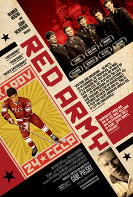

Gabe Polsky
2014
85 minutes
This is a documentary produced by Werner Herzog that tells the story of the Soviet national hockey team. Many Americans only know the team as being the team that was notoriously defeated by the American team at the 1980 Winter Olympics. This film tells the broader story of the team, for whom this blip was only the second time they failed to win the gold in their history.
The story of course is a broader story that traces how the team's history matches with the changing times in the Soviet Union, and the fates of many of the core members who defected or were traded to other professional teams for much-needed money.
It's at heart a sports documentary, and it's a very good example of one of those. You're not generally a hockey fan and certainly not much of a consumer of sports documentaries, but you do have to admit it's more interesting than the subject might initially seem. The behind-the-scenes wrangling in the hockey business is at least interesting. You watch most of this in a bar on your phone with a beer in front of you, which makes it feel like you're catching an episode of 30 for 30 on ESPN-2 or something pre-pandemic.
Time to choose something different: